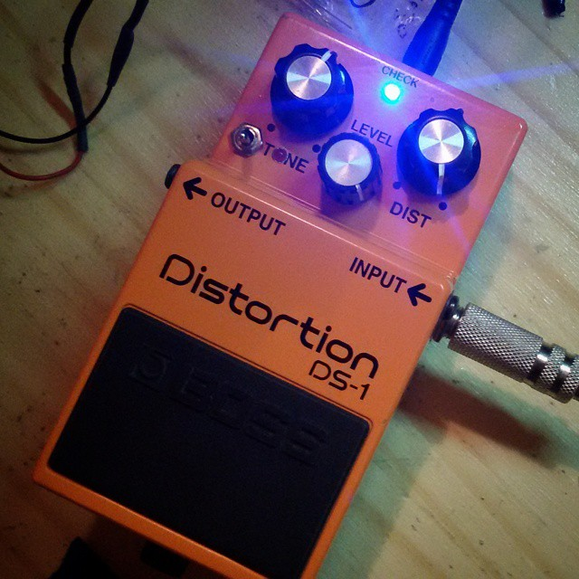

SOUNDER EFFECT
Proyectos

Elijas lo que elijas
Ya sea diseñando a cada detalle tu próximo Pedal o armando el Kit vos mismo, nuestro objetivo es que disfrutemos no solo del sonido final, sino también de todo el proceso de creación. Que cada pedal que agreguemos a nuestro setup sea una experiencia única.

Reparacion
En Sounder no solo fabricamos pedales: también los reparamos y les damos nueva vida. Conocé nuestro servicio técnico de reparación de pedales… y no pierdas las esperanzas.

Servicio técnico de pedales de efectos
Fabricacion de pedales analógicos de guitarra y bajo 100% artesanales